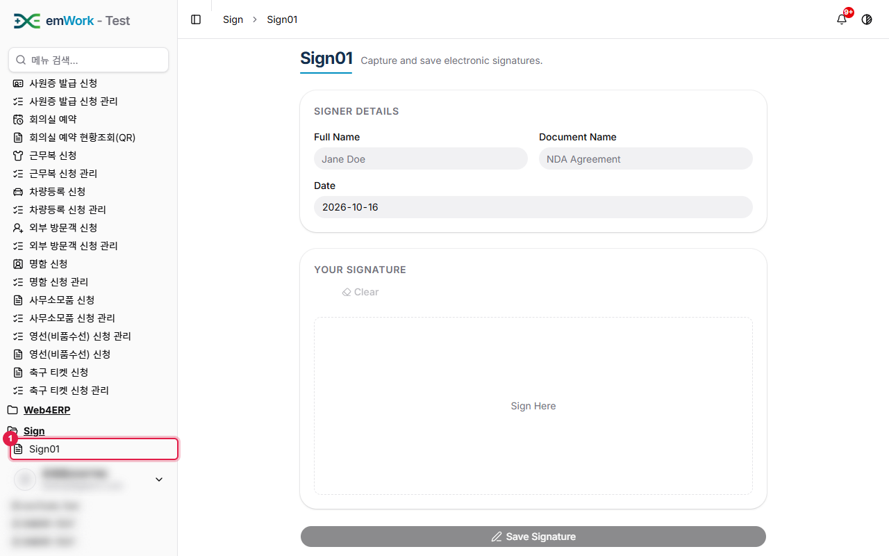
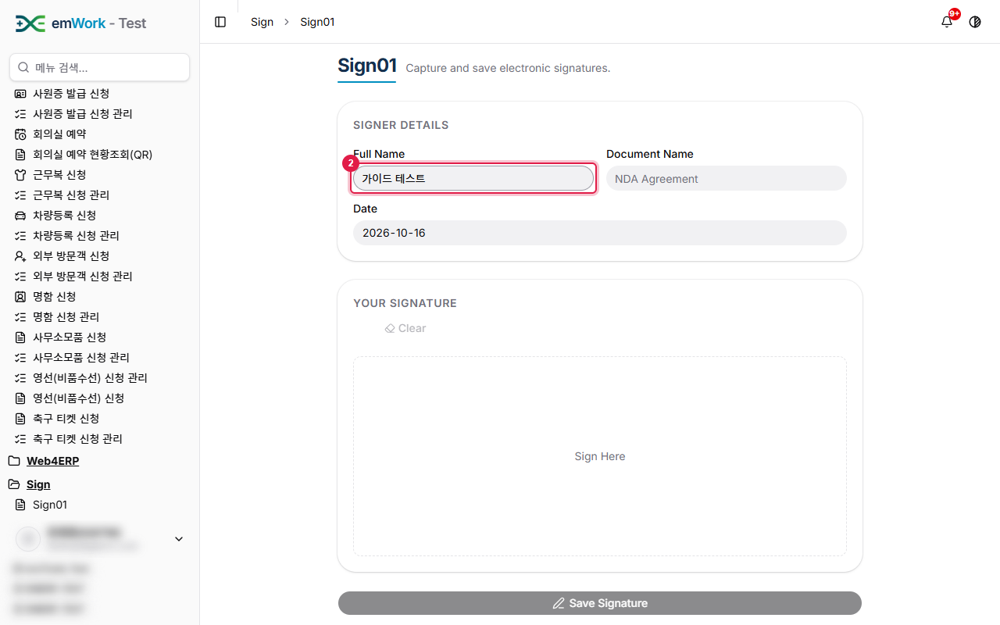
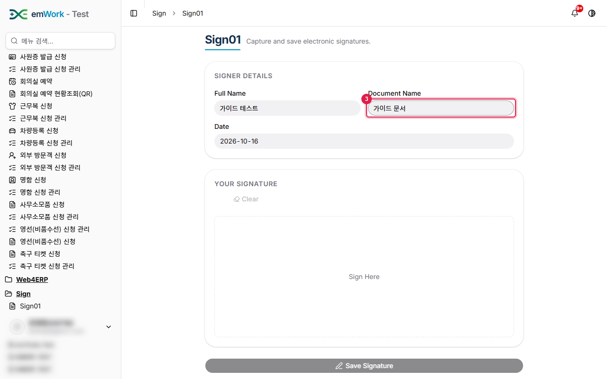
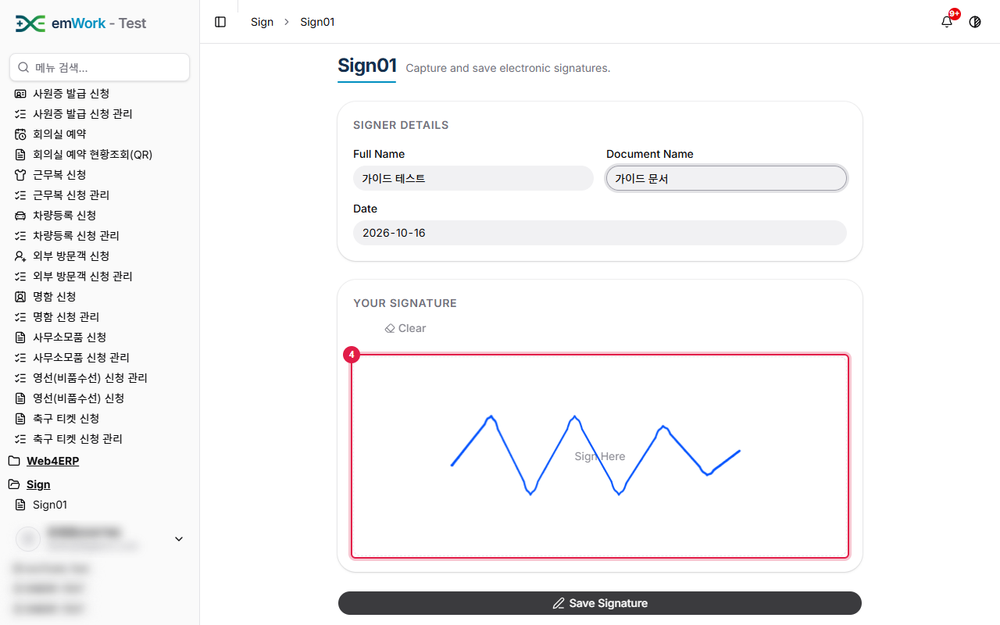
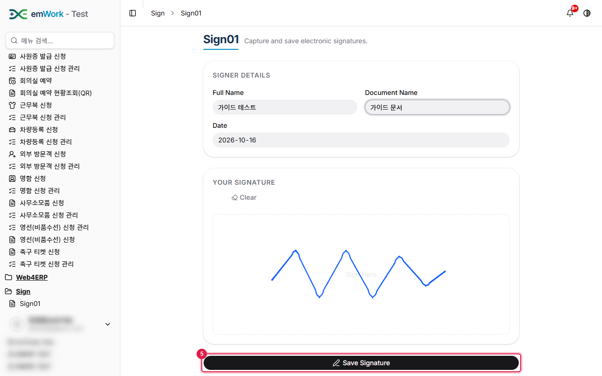
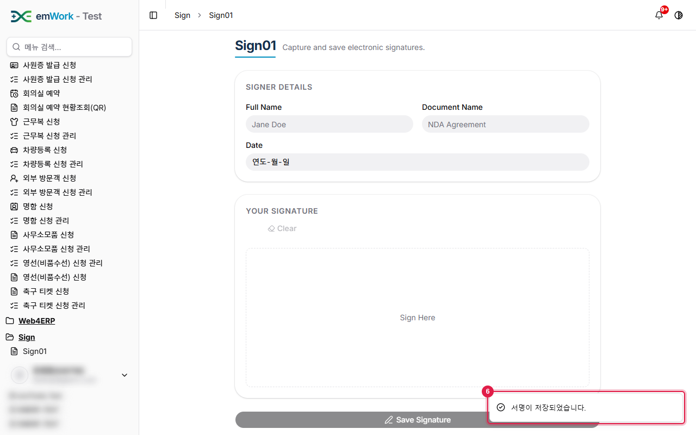
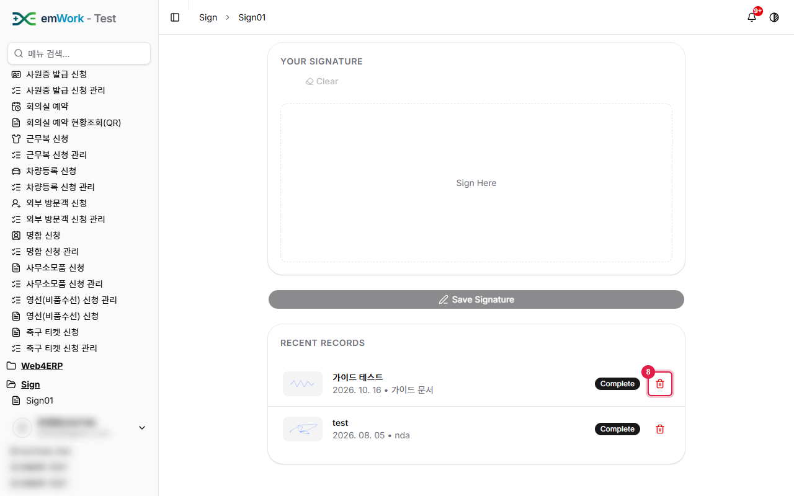
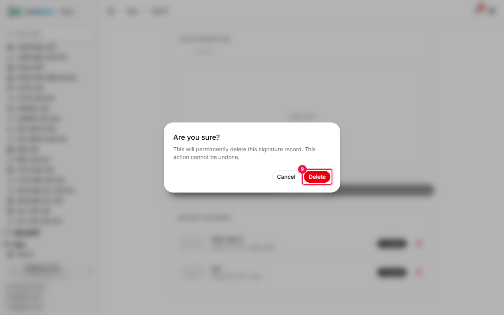
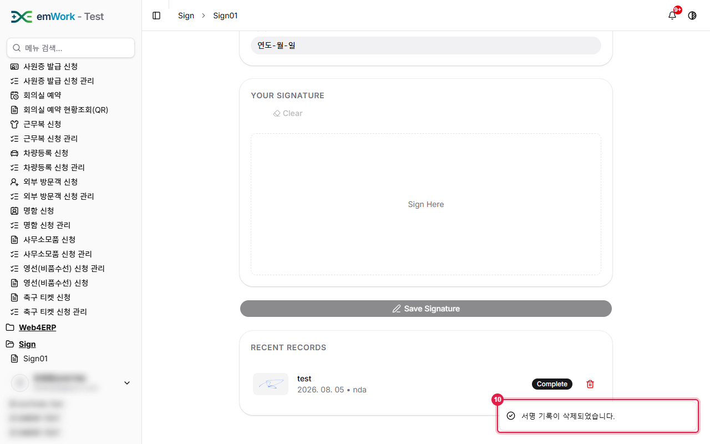

work4ERP 사용자 가이드 › Sign
Sign01
주요 내용
- 전자서명을 입력하고 저장하는 화면입니다. 서명자 이름과 문서 이름을 입력한 뒤 서명 패드에 서명합니다.
주의 사항
- 저장한 서명 기록은 삭제하면 복구할 수 없습니다.
- 서명은 마우스(또는 터치)로 직접 입력합니다.
기능 요약
- 서명 패드(지우기 Clear), Save Signature.
- 최근 기록(서명 미리보기·상태)과 삭제.
1
사이드바에서 'Sign › Sign01' 메뉴를 클릭합니다. 전자서명을 입력하고 저장하는 화면입니다. 서명자 정보를 입력하고 서명 패드에 서명합니다.

2
서명자 이름(Full Name)을 입력합니다.

3
서명할 문서 이름(Document Name)을 입력합니다. 날짜는 오늘 날짜가 기본으로 입력됩니다.

4
'Sign Here' 영역에 마우스(또는 터치)로 서명합니다. 다시 하려면 'Clear'를 클릭합니다.

5
'Save Signature' 버튼을 클릭해 서명을 저장합니다.

6
저장되면 완료 메시지(토스트)가 표시되고 아래 목록에 서명이 추가됩니다.

7
저장한 서명은 목록에서 확인하고, 휴지통 아이콘으로 삭제할 수 있습니다.
8
휴지통 아이콘을 클릭해 서명을 삭제합니다.

9
확인 창에서 'Delete'를 클릭하면 서명 기록이 영구 삭제됩니다.

10
삭제되면 완료 메시지(토스트)가 표시됩니다.
